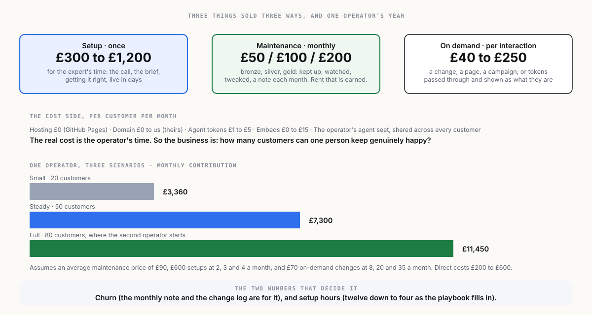

← What you sell · Index · Next →
5 · The business model

The cost side is nearly empty
| Cost | Per customer, per month | Notes |
|---|---|---|
| Hosting | £0 | GitHub Pages, public repository. |
| Domain | £0 to the operator | The customer owns and pays for it, about £10 to £15 a year. |
| Agent tokens for changes | £1 to £5 | A typical content change costs pence in tokens; a busy month a few pounds. Metered, or absorbed in the package. |
| The operator's agent seat | about £20 to £200 a month, shared across all customers | One Claude or ChatGPT plan supports the operator's sessions for every customer. |
| Third-party embeds | £0 to £15 | Forms and bookings have free tiers; paid tiers are passed to the customer. |
| Operator time | the real cost | Setup: 4 to 12 hours. Maintenance: 20 to 90 minutes a month depending on package. |
So the gross margin on maintenance is very high, and the business is entirely about how many customers one operator can keep genuinely happy. That is the number to watch.
Capacity
A working assumption for one operator, full time, once the playbooks are in place:
| Activity | Hours per month |
|---|---|
| Setups, at 3 a month averaging 8 hours | 24 |
| Maintenance, 50 customers averaging 45 minutes | 38 |
| On-demand changes, 20 a month at 45 minutes | 15 |
| Sales, admin, the monthly notes | 30 |
| Total | 107 of about 160 available |
Fifty customers is comfortable for one person. Eighty is the ceiling before a second operator, and the second operator is the moment the playbooks prove they are playbooks.
Three scenarios, one operator
Average maintenance price assumed at £90 (a mix of bronze, silver and gold). Setup average £600. On-demand average £70.
| Small | Steady | Full | |
|---|---|---|---|
| Customers on maintenance | 20 | 50 | 80 |
| Monthly recurring revenue | £1,800 | £4,500 | £7,200 |
| Setups per month | 2 | 3 | 4 |
| Setup revenue per month | £1,200 | £1,800 | £2,400 |
| On-demand changes per month | 8 | 20 | 35 |
| On-demand revenue per month | £560 | £1,400 | £2,450 |
| Revenue per month | £3,560 | £7,700 | £12,050 |
| Direct costs per month (tokens, seats, embeds) | £200 | £400 | £600 |
| Contribution per month | £3,360 | £7,300 | £11,450 |
| Annual contribution | £40,320 | £87,600 | £137,400 |
The Small column is a viable one-person business from month six. The Steady column is a good one. The Full column is where the second operator starts. None of these needs outside money, and that is a feature, because the next section is about why an investor would want in anyway.
The two things that decide the numbers
- Churn. A customer who leaves after six months was worth £540 of maintenance plus their setup. One who stays three years is worth £3,240 plus the upsells. The monthly note and the visible change log are the churn tools. Track it from customer one.
- Setup time. The first setup takes twelve hours. The twentieth takes four, because the playbook, the templates and the agent's instructions are reusable. Every hour off the setup is margin or a lower price, and a lower price is a bigger market.
The rule from the operating model
Be profitable before you raise. This business can be profitable inside a year with one operator and no capital beyond a laptop, an agent seat and a domain for the sales site. Do that first. Then the conversation with an investor is about growth, not survival.